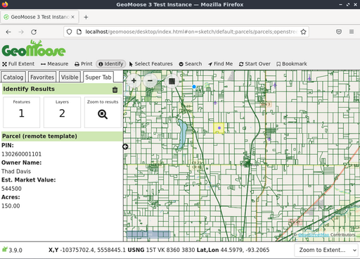
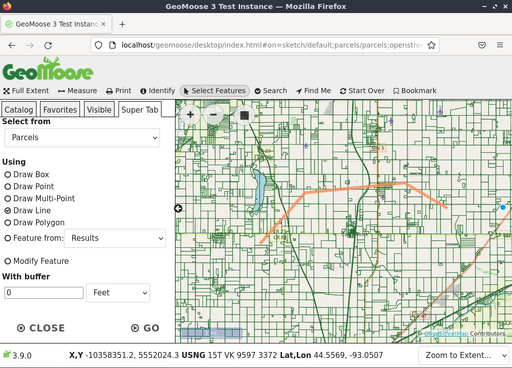

GeoMoose Snabbstart¶
GeoMoose är ett webbläsarbaserat kartramverk för visning av distribuerade kartografiska data. Det är särskilt användbart för att hantera spatiala och icke-spatiala data inom läns-, stads- och kommunkontor (från vilka GeoMoose härstammar).
GeoMoose är ett ramverk för hantering av GIS-dataportaler. Den installerade versionen av GeoMoose på Live DVD:n är en exempelkonfiguration som visar en exempeluppsättning av lager.
Innehåll
Starta GeoMoose¶
Gå till mappen ”Browser Clients” på skrivbordet.
Klicka på ikonen ”Starta GeoMoose” på skrivbordet. Då startas standardwebbläsaren som automatiskt navigerar till rätt plats.
Du kommer att få upp en webbsida som visar ett demogränssnitt för en GeoMoose-instans.

De gränssnitt som presenteras ovan visar:
En bannerbar
En verktygsfält
Ett kartfönster med navigerings- och zoomkontroller
En sidomeny med:
En rullgardinslista med ”Hoppa till” plats
Kontrollflikar som börjar med ”Catalog”, för visning av lagerlistan. Efter behov visas ytterligare flikar: en ”Information”-läsare, en ”Custom”-flik för utdata och andra.
Ett sidfotsfält med:
Flera koordinatavläsningar, en vardera för: X,Y (lokala datasetkoordinater), LAT/LON (decimal) och United States National Grid (USNG)
En redigerbar rullgardinslista för en vyskala att välja mellan eller definiera.
Identifiera en plats¶
Klicka på knappen ”identifiera” (”i” i en cirkelikon) i det övre verktygsfältet
Klicka på en punkt på kartan.

Katalogen på vänster sida av kartvyn ändras till ”Super Tab” - en plats där GeoMoose visar resultat av en åtgärd eller ber om mer information. I det här fallet visas resultaten av en fråga om varje aktivt och identifierbart lager för den punkt som du klickade på i kartan.
Använd mätverktyget¶
Med GeoMoose mätverktyg kan du: * mäta en punkt (returnera koordinaterna för en vald punkt) * mäta avståndet längs en linje som kan bestå av flera segment * mäta arean för en polygon.
Klicka på ikonen med den dubbla pilen i det övre verktygsfältet för att starta mätverktyget.
Välj att mäta en punkt, linje eller polygon.
Klicka på kartan där du vill mäta. Om du vill mäta en punkt klickar du bara på den punkt på kartan som du vill mäta. För att mäta en linje eller polygon klickar du på kartan för varje toppunkt a i linjen/polygonen.
Dubbelklicka för att avsluta linjen/polygonen.


Observera
kan du också mäta en befintlig funktion på kartan (om den kommer från ett vektorlager, inklusive tidigare sökresultat) utan att behöva spåra över den manuellt.
Välj funktioner¶
Du kan välja funktioner från en punkt, linje, polygon eller från en befintlig funktion. Börja med att klicka på ikonen ”Select Features” (muspekarikonen), välj punkt, linje, polygon och börja rita ditt val på kartan. Du kan dubbelklicka på den sista punkten för att avsluta ritprocessen. Om du vill justera ditt val kan du göra det med alternativet ”Modify Feature”.
Du har också möjlighet att välja funktioner baserat på en buffrad version av det du ritade. Standardinställningen är att buffra med ”0”, vilket inte gör någonting. Positiva värden expanderar det du ritade med det avståndet, negativa värden krymper din ritning.
Välj vilket lager du vill välja funktioner från med hjälp av valboxen ”Query Layer”. Observera: Alla lager kan inte användas med verktyget Select Features. För att vara tillgängligt för urval måste ett lager vara ett vektorlager och konfigureras för urval i kartboken.

Du kan behöva scrolla ner i ”Super Tab” för att hitta ”Go”-knappen om ditt webbläsarfönster är litet.

Klicka slutligen på knappen ”Go” för att faktiskt välja funktionerna. GeoMoose returnerar en sammanfattning av vad som valdes i Super Tab, markerar de valda objekten på kartan och visar en attributtabell för de valda objekten.

Om du håller muspekaren över en linje i tabellen markeras motsvarande funktion på kartan. Dessutom kan du använda trattikonerna i tabellhuvudet för att filtrera resultaten ytterligare och använda triangelikonerna i tabellhuvudet för att sortera resultaten. Resultaten kan laddas ner som en CSV-fil med hjälp av nedladdningsikonen högst upp och till vänster om tabellen.
Sök efter funktioner¶
Du kan också söka efter egenskaper per attribut. Börja med att hålla muspekaren över menyn ”Search” i verktygsfältet och klicka sedan på ikonen ”Search Parcels”. Ange dina sökparametrar i Super Tab och klicka sedan på knappen ”Go!”.

Följande skärmdump visar en sökning av alla paketägare som innehåller namnet ”frank”.

Tre resultat visas i listan och är markerade på kartan.

Om du klickar på förstoringsglasikonen/skiftenumret zoomas du in till det specifika skiftet, vilket illustreras i följande skärmdump.

Skriv ut kartan¶
Nästa skärmdump visar hur verktyget Print ser ut i demoversionen för GeoMoose. När du klickar på verktyget Print visas en dialogruta som frågar efter en titel för den utskrivna kartan, sidstorlek och rotation, utskriftsupplösning och visar en förhandsgranskning av vad som kommer att skrivas ut.

Om du klickar på knappen Skriv ut i dialogrutan genereras en PDF-utskrift som du kan öppna eller spara.

Hur vill du gå vidare?¶
Detta är bara det första steget på vägen mot att använda GeoMoose. Det finns mycket mer funktionalitet som du kan prova.
GeoMoose-projektets hemsida
GeoMoose handledning